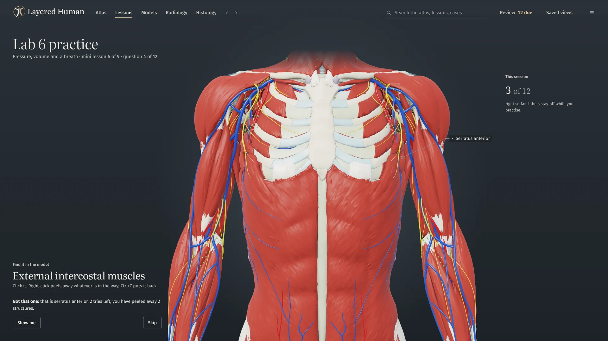

Nerve: Musculocutaneous nerve Action: Flexes the elbow and supinates the forearm
TA2 2465, 2466 · Muscular system · Upper limb
Skin to bone, one layer at a time
Drag the dissection slider and the body comes apart from the skin inwards. Depth is measured against how thick the body is at each point, so the hand and the thigh are uncovered together. Want one layer on its own? Show only that slab.
Skin surface0–8%The body as you first see it, nothing taken away.
Deep fascia16–26%The fascia that wraps the muscles of the trunk and limbs.
Superficial muscles26–40%The deltoid, the biceps, the abdominal wall and the front of the thigh.
Deep muscles40–55%Ribcage, abdominal organs and the deep muscles.
Skeleton & joints55–70%Bones and joints of the limbs, the organs still in place.
Body cavities70–85%The heart, the great vessels and the kidneys.
Swipe for all six depths 1 of 6
Cut anywhere. The cut names itself.
Section the body sagittally, coronally or transversely. Every structure the plane passes through is named around the edge of the view. Click a name to select it.
1Pectoralis major
2Right lung
3Liver
4Latissimus dorsi
5Sternum
6Right ventricle
7Left ventricle
8Left lung
9Thoracic vertebra
Transverse section of the thorax
Seen from below, as on a CT
Transverse section through the thorax, seen from below, as on a CT. Every structure the plane passes through is named.
Atlas · Sections · sagittal, coronal, transverse
From the kidney to a podocyte, in one zoom
41 interactive 3D models open in the same viewer, with the same controls and labels as the atlas. Step the kidney from the whole organ down to the podocytes. Hide the heart’s wall panels one at a time to look inside a true-scale heart in 119 parts.
KidneyThe whole organ
Renal corpuscleThe glomerulus in its capsule
PodocytesFoot processes on a capillary
Kidney with the nephron
Ren, nephron, podocytus
Kidney with the nephron. True scale. Eight stored views.
Models · 41 models · one viewer
Read the film with the body beside it
104 radiology cases put a real radiograph, CT, MR or ultrasound next to the live model, labelled on both sides. Click a number on the film and the model selects the same structure. In five chest cases, the model shows the disease itself.
The model is set up to match each film. It is not a scan of that patient.
Chest radiograph, PA, labelled with numbers that match the model.
Chest radiograph, PA
1Trachea
2Right clavicle
4Right humeral head
5Superior vena cava
7Right atrium
8Left ventricle
12Right hemidiaphragm
17Left lung
The live model, set up like the film, with the same numbers.
The lab course covers Labs 1–9 and two lab practicals in 109 mini lessons, with 1,824 graded practice items. Find a structure in 3D, name the one that’s highlighted, or put the steps in order. Then sit a practice exam of 20, 40 or 60 questions, or everything.
In Hunt, nothing is labelled. Peel structures away one at a time and find the one you’re asked for, in three tries.
What you miss comes back a day later, then after four days, then less often as you get it right.
A lesson step, with the 3D view set up beside it
Every lesson sets up the view for you
A lesson step
303 lessons in 1,614 steps. Each step switches systems, dissects to a depth, sections or opens a micrograph, so you’re always looking at the right thing. 1,525 of the steps ask you a question before you move on.
Lessons · 303 lessons · 1,614 steps

Practice beside the model
Practice beside the model
Find it, name it, put it in order
Graded practice sits beside the 3D view. Practice exams run to 20, 40 or 60 questions, or everything.
Lab course · 109 mini lessons · 1,824 practice items
The lab course
109 mini lessons, each a few short steps on one topic. Learn walks through the steps with the 3D view set up. Practice runs a short graded session beside the model.
Your course may be organised differently. Search finds any structure, lesson or case by name.
Lab 1Nerve physiology, reflexes and general senses
Lab 2Eye, ear, hearing and balance
Lab 3Blood and heart structure
Lab 4ECG and heart function
Lab 5Blood vessels and circulation
Practical 1Review of Labs 1–5, with a practice exam
Lab 6Respiratory structure and ventilation
Lab 7Exercise physiology and pulmonary health
Lab 8Digestive and urinary anatomy
Lab 9Reproductive systems and early development
Practical 2Review of Labs 6–9, with a practice exam
12345
Tissue, slide and model together
101 tissues with 1,049 micrographs. The 3D models show the same layers in depth, and you can select, hide or cut through each one: the gut wall, the liver lobule, the osteon, the retina.
3,922 structures, from bones and ligaments to cranial nerves and skin regions
1,109 bony and organ landmarks
Latin names and Terminologia Anatomica 2 IDs
Origins and insertions mapped on the bone
Innervation for 468 muscles, and the action of 466
423 clinical correlations, searchable by sign or syndrome
Free. Offline. Yours.
Layered Human runs entirely on your computer. Your progress, quiz history and notes stay in your own user folder, and updating or reinstalling never loses them. Updates download in the background. The code is open source under the MIT licence.
The 3D atlas is adapted from Z-Anatomy and BodyParts3D, shared under CC BY-SA. Terms follow Terminologia Anatomica 2. Radiology and histology images come from Wikimedia Commons contributors, and each one shows its author and licence. Layered Human is a study aid, not a medical device.
Atlas
Z-Anatomy, “The libre 3D atlas of anatomy”, CC BY-SA 4.0 (Gauthier Kervyn et al.)
Terminologia Anatomica 2 (FIPAT). Descriptions: Wikipedia, CC BY-SA 3.0
Images
Wikimedia Commons contributors; each image shows its author, licence and source in the app. On this page: Mikael Häggström (CC0), Sara Nabih (CC BY-SA 4.0), Echinaceapallida (CC BY-SA 4.0)
If you share the anatomy dataset or anything made from it, credit these sources and share it under the same licence.
Ready when you are
About 3.4 GB. Free for Apple silicon Macs (macOS 13 or later) and Windows. The first time you open it, your computer may warn you. The app isn’t signed with a paid developer certificate, so your computer can’t check who made it. Only the installer needs the extra click, and the code is public on GitHub. Here’s what to click.
Right-click the downloaded file and choose Run with PowerShell. Double-clicking it opens Notepad instead.
It downloads the installer parts, joins them and starts the installer.
If “Windows protected your PC” appears: More info, then Run anyway.
If that doesn’t work, open PowerShell in your Downloads folder and run
Set-ExecutionPolicy -Scope Process Bypass -Force; $ProgressPreference='SilentlyContinue'; .\Download-Windows-Installer.ps1
After installing. Your progress, quiz history and notes are kept in your user folder, so updates and reinstalls never lose them. Changed parts download in the background and open on your next launch. Some updates are large.
Yes. Download it from GitHub releases. The code is MIT-licensed.
Do I need the internet?
Only to download it and to get updates. After that it runs entirely on your computer.
Which computers does it run on?
Windows, and Macs with Apple silicon (M1 or newer) on macOS 13 or later. On Linux you can run it from source.
Why is it so big?
About 3.4 GB: a whole-body atlas with 3,922 structures, 41 models and the radiology and histology images, all stored on your machine so it works offline.
Why does my computer warn me?
The app isn’t signed with a paid developer certificate. What to click.
Where is my progress?
In your user folder. Updating or reinstalling never loses it.
Will it match my course?
It has a lab course for Labs 1–9 and two practicals, plus lessons by system, region and level. See the topics.
Can I use it to diagnose?
No. It’s a study aid, not a medical device. Radiology models are set up to match each film, not fitted to it.
Something went wrong.
The app writes an error log to the logs folder in your user folder. Report it on GitHub.


_chest_radiograph_(X-ray).jpg){kind=link}